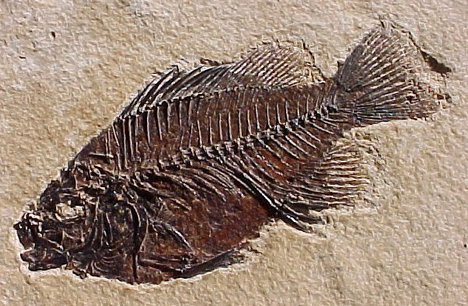

@fossil4life


Saturnalia Crataeomus Tylosteus Aepisaurus Velocisaurus Oryctodromeus Coelurosauravus Achelousaurus Tribelesodon Kaatedocus Ganzhousaurus Plateosauravus Altirhinus Trinisaura Janenschia Vitakridrinda Palaeopteryx Wuerhosaurus Yunnanosaurus Talarurus Sinotyrannus Wakinosaurus Zapalasaurus Albisaurus Symphyrophus Frenguellisaurus Amphicoelias Futabasaurus Condorraptor Dravidosaurus Leptoceratops Panamericansaurus Janenschia Riojasuchus Crichtonsaurus Qantassaurus Shenzhouraptor Archaeornithomimus Barrosasaurus Laelaps Albalophosaurus Tenontosaurus Jeholosaurus Cedarosaurus Kunmingosaurus Saichania Amargasaurus Algoasaurus Ischisaurus Dicraeosaurus Syrmosaurus Lagosuchus Sarcolestes Eoceratops